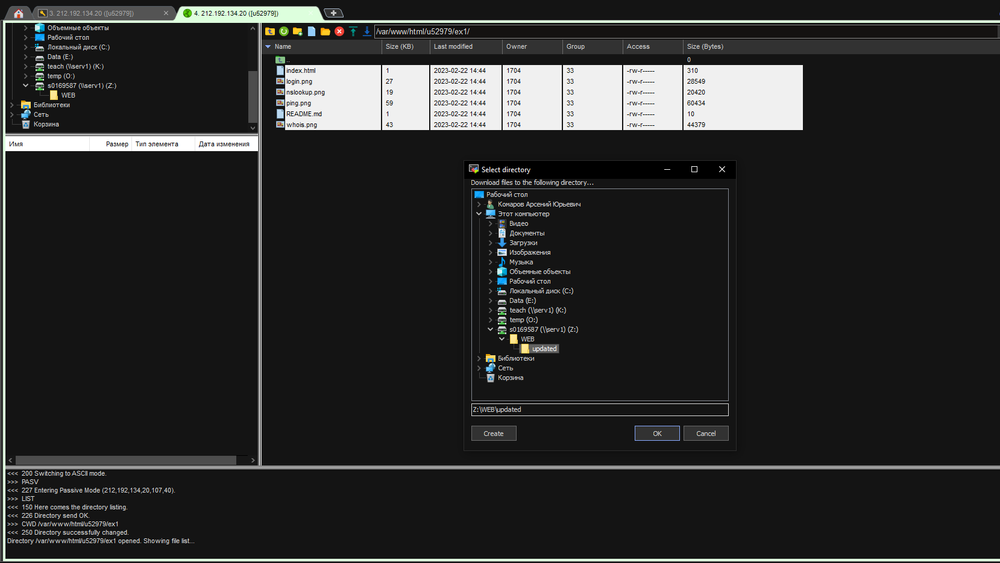

Login
Вход по SSH на сервер по IP 212.192.134.20:22 и используя учетную запись u52979

Ping command
Выполнение команды ping. Обмен 64 байтами данных с адреса 185.13.84.92 на 185.13.84.92 - порядковый номер запроса, ttl - время жизни запроса, time - время ответа

NSlookUp
Выполнение nslookup - запрос к dns для получения информации о доменном имени
Whois
Выполнение whois - команда для получения информации из реестра о целевом сервере, в частности дату регистрации домена
FTP login
Подключение к серверу по протоколу FTP
FTP
Процесс скачивания файлов в папку "updated" по протоколу FTP
